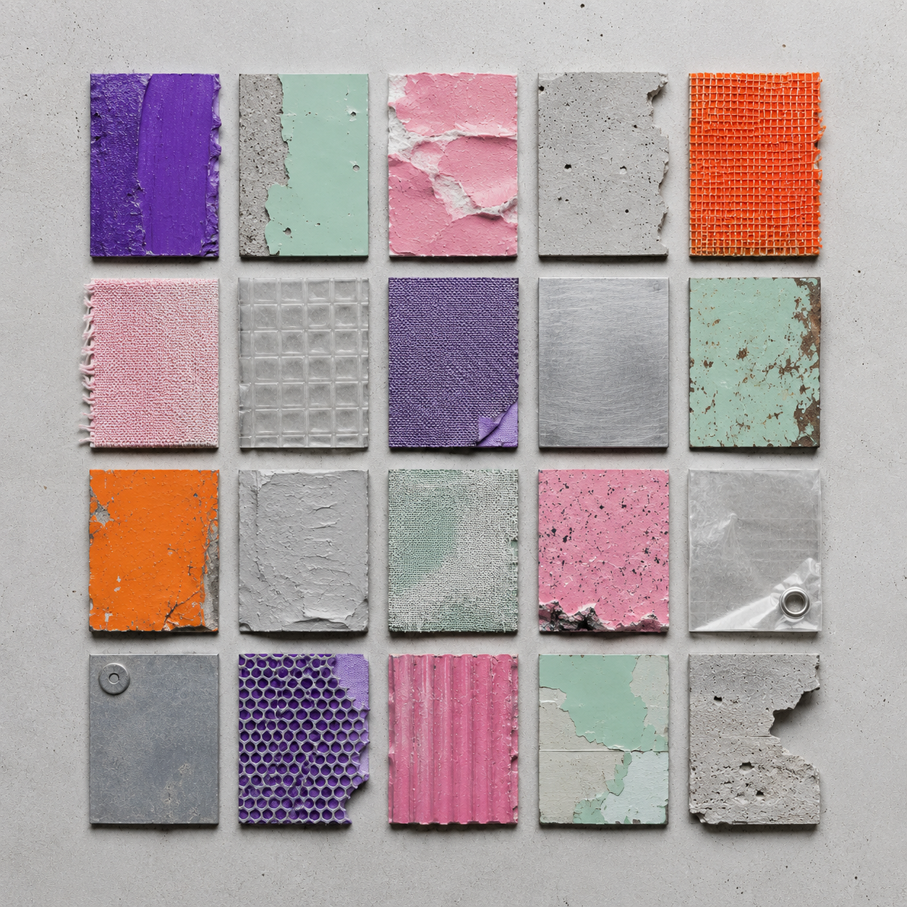
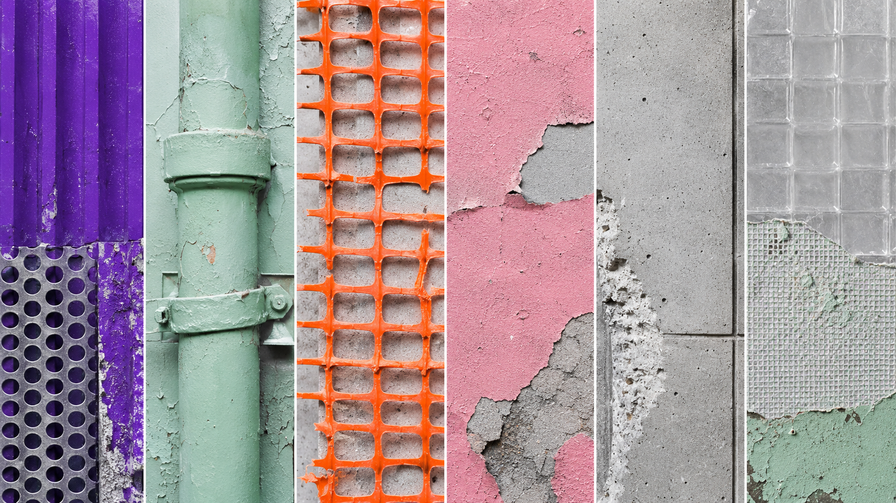
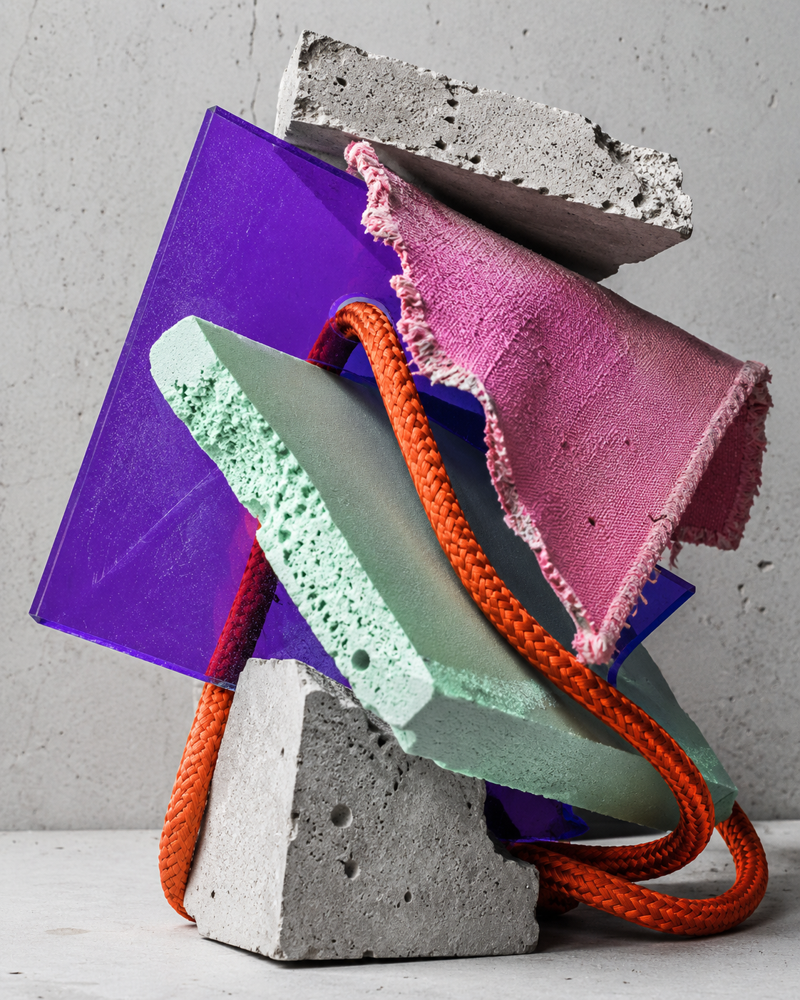
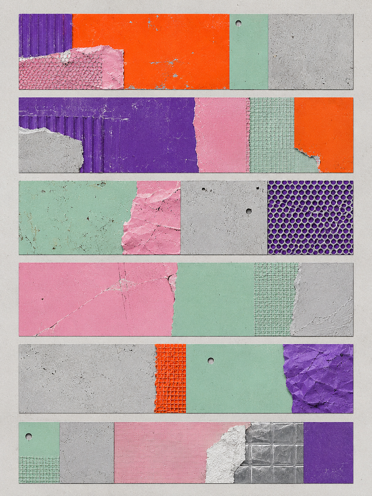

视觉方法 / PROCESS
从原始照片提取局部色彩，经裁切、并置与比例调整，测试不同冲突强度。
A11 · FIELD NOTES
色彩冲突 01
记录环境中不协调的颜色并重新编排，观察“难看”如何生成可辨认的秩序。

本项目记录街道、商店、住宅与施工现场中彼此不协调却同时存在的颜色关系。通过现场拍摄、取色、材料采样与色块重组，将墙面涂层、塑料制品、警示标记和日常用品转化为可比较的视觉档案。最终形成色卡、样本板与对照图，观察审美判断如何受使用痕迹、环境功能和偶然并置影响，并讨论所谓“难看”能否在重复与差异中建立新的秩序。
从原始照片提取局部色彩，经裁切、并置与比例调整，测试不同冲突强度。
记录这些颜色是因为它们通常不会被视为需要设计的对象。广告牌、墙漆、胶带和塑料用品各自服从不同用途，叠在一起后却形成稳定关系。暂不判断它们是否协调，而是反复取样、排列和比较，查看不适感来自色相本身，还是材料、尺度与使用情境。



